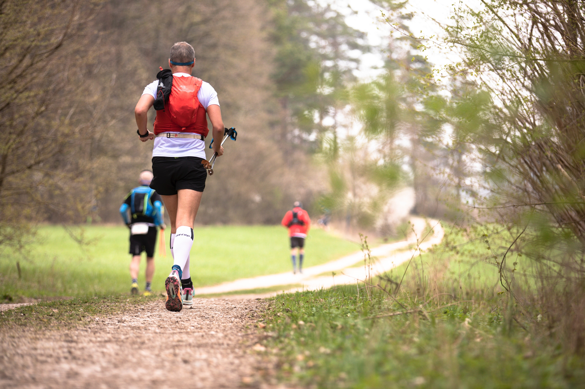

Congratulations on taking a forward step to get in shape and feel great. Many people are guilty of wishing they could get a sculpted body from eating junk food and watching TV all day. But that is just not going to happen. Even though getting in shape sounds like a long, time-wasting process, the effort put towards being in shape has many positive effects. If you want to start your journey to having a better body to feel great, here are some tips:
Exercise daily for at least an hour. You do not have to kill yourself from running, jogging, etc., but you should have some sort of moderate physical activity in your everyday life. If you're looking to shed a few pounds fast, do a higher-level intensity workout. For example, go on a walk at a brisk pace for an hour. Or, you can jog and set certain intervals to sprint during that hour. Make sure you're not in severe pain during your workout. Just a warning, your muscles will ache after a high intensity workout. It may be irritating, but that means your body is changing for the better. Be sure to stay hydrated, stretch, and eat foods with a decent amount of protein after each workout. The protein will help keep your muscles, not fat, rebuilding.
No matter how bad your stomach is telling you to go for candy over healthy food, try to stay away from
sweets.
Sugar from candy will not help you get in shape. Even if it's just a single candy bar, one will
eventually lead to another.
Fruits and vegetables are the best thing to eat when getting into shape. Apples, for example, do a good
job at making the
stomach feel full for up to 3 to 4 hours. Green vegetables such as green beans and broccoli keep the
digestive system clean and running.
Also, stick to lean meats like turkey and chicken. Seafood, such as, shrimp, and tilapia are also great
alternatives.
These foods are full of protein and healthy nutrients to help keep muscles fit and ready for workouts.
In addition, be sure to
portion what you eat. Having a good metabolism comes from portioning meals. Try to plan out eating six
times a day and setting
smaller portions, rather than having three large meals throughout the day. This will also help you find
yourself breathing smoother
when working out rather than huffing and puffing for air. This is because you will have less food in
your digestive system, which
means more energy is used toward your exercise.
Keeping track of how many calories you eat in a day will be helpful in planning out your physical exercising. Ever wonder why body builders' body masses are so big? That's because they plan out their meals and take in more (healthy) calories than the average person. On the other hand, losing weight and striving for a skinnier physique will involve more physical exercise than calories you ingest.
Even though most of us have eight-hour jobs during the day or night, it is crucial to get enough sleep to recharge the body's batteries. Six to eight hours of sleep will keep the body going throughout the day, but if you happen to feel tired at any point after coming home from work, by all means take a small nap before exercising. You should only nap for about a half hour. This will prevent you from staying up later in the night.
An important key to being in shape is to set goals and keep a positive mindset. If you stay positive, you will be able to push yourself to get that fit body you've always wanted.